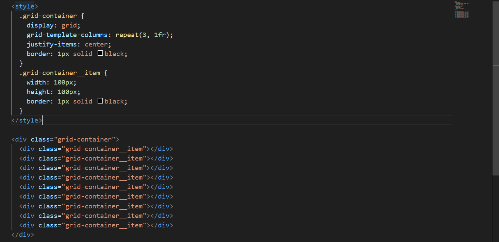

In css, Justify-items and justify-self properties used to control the horizontal alignment of grid items within a grid container. Let's go over each property with code example.
1. Justify-items :This property is used to set the default horizontal alignment for all grid items inside a grid container. It applies to all direct children of the grid container.
Example 1:
Result :
In this example all grid items inside the .grid-container will be horizontally centered within their respective grid cell because justify-items property is set to center.
1. Justify-self :This property is used to set the default horizontal alignment for all grid items inside a grid container individually. It applies to all direct children of the grid container. It is used to control the alignment of the each element individually. overriding the justify-item property.
Example 2:Result :
In this example all grid items inside the .grid-container will be horizontally centered within their respective grid cell because justify-items and this will get override by property justify-item property.